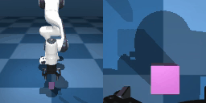
The trained policy executing a clean reach → grasp → lift (front | wrist cameras) — learned entirely from a sparse reward, in ~40 minutes on a single GPU.
over one training run
to a reliable grasp
(~$0.55 of compute)
(autonomous in sim)
Learn from a reward
you almost never see
The arm gets +1 only when it lifts the cube above 10 cm, and 0 otherwise. For thousands of steps it succeeds by accident, if at all. Yet from that whisper of a signal — plus a handful of prior demonstrations — SAC + RLPD shape a reliable grasp.
No hand-designed reward, and no human at runtime: in simulation the environment supplies the reward, so training is fully autonomous. The human is a concept we teach, not a dependency.
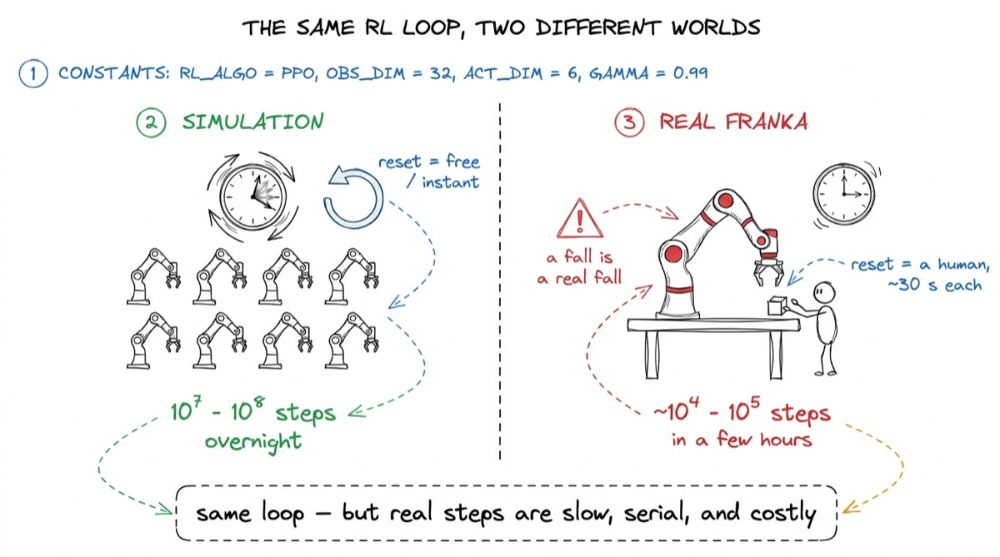
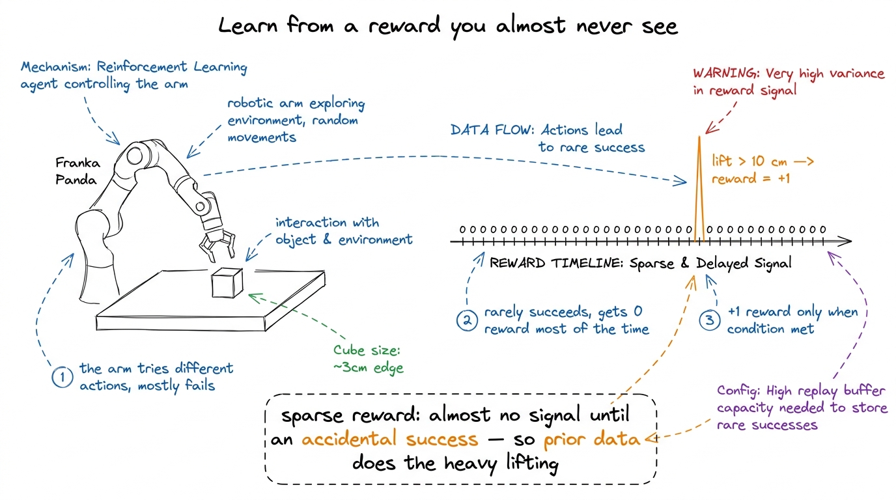
Abstract
Reinforcement learning is often dismissed as impractical for real robots — too sample-hungry, too fragile,
too expensive outside a simulator. HIL-SERL (Luo et al.,
2024) is the counter-argument: it trains vision-based manipulation policies to near-perfect success in one to two
hours on a single real robot. We reproduce its learning core — Soft Actor-Critic combined with
RLPD (Reinforcement Learning with Prior Data) — entirely in
simulation, fully autonomously, on a single L4 GPU. On LeRobot's
gym-hil / PandaPickCube task a Franka Panda goes from 0% to ~100% grasp success in ≈5,000
gradient steps (≈40 minutes), learning almost entirely from a sparse reward it initially never receives.
We give the full recipe, the learning dynamics, an honest account of the engineering it takes to run distributed
RL on ephemeral cloud GPUs, and a concrete sim-to-real bridge to the $200 SO-101 arm — everything one
command from reproduction.
HIL-SERL = SAC + RLPD + reward-from-pixels + a human option
Four ideas stack into a system that learns manipulation on raw camera images, sample-efficiently. In simulation we run the first two autonomously; the last two are what carry the method to real hardware.
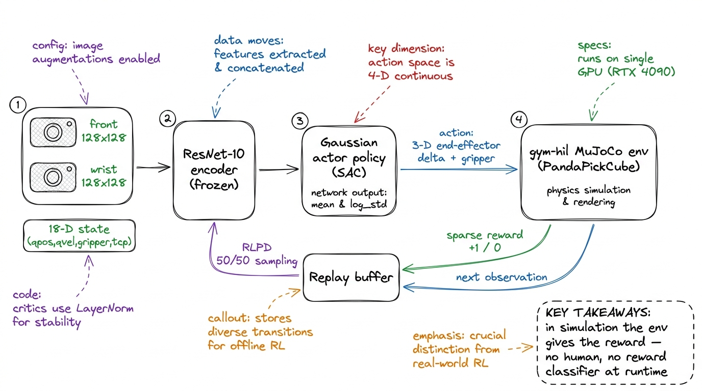
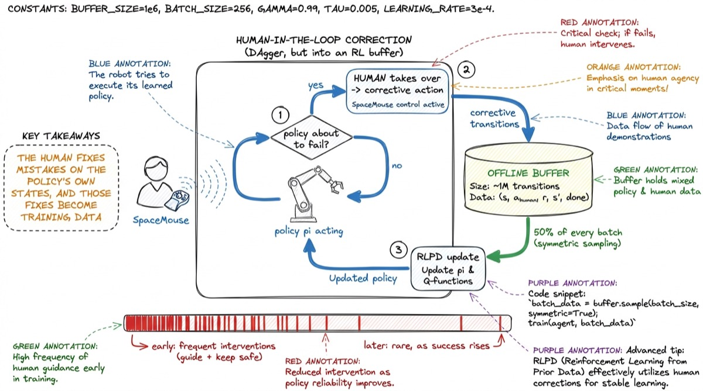
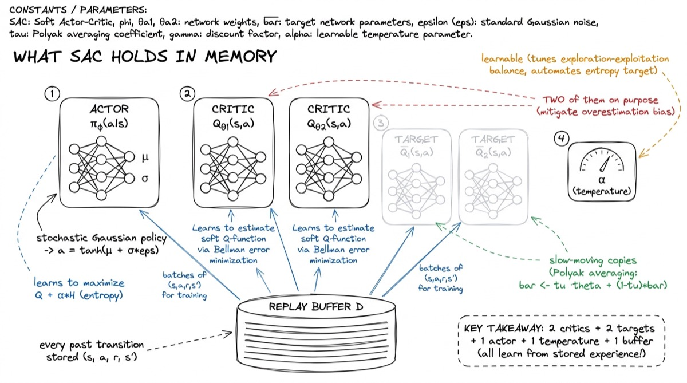
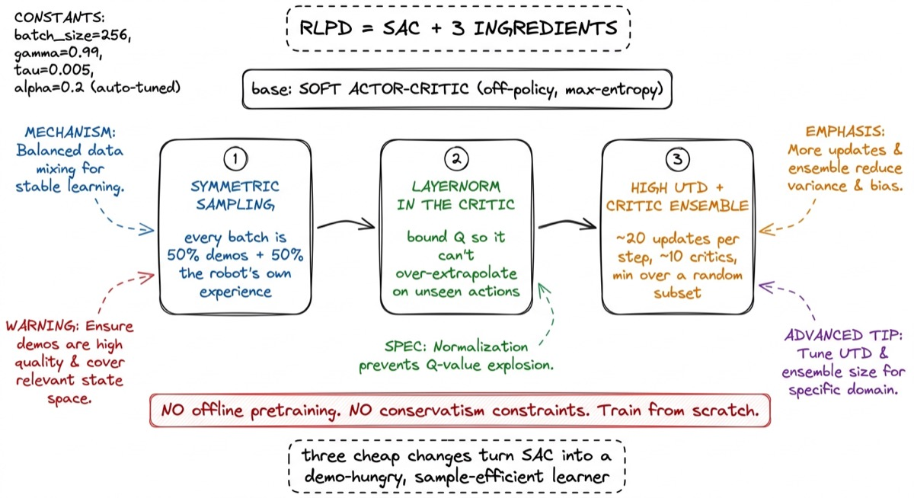
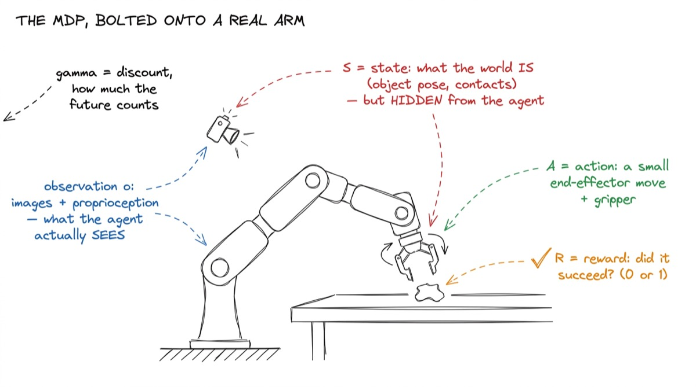
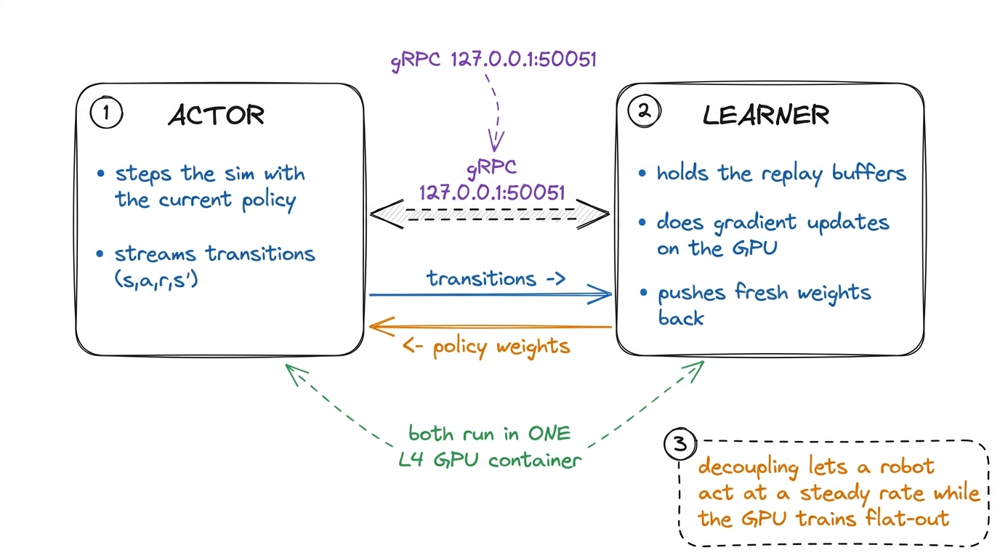
Anchoring a sparse-reward search
Sparse-reward manipulation is a needle-in-a-haystack exploration problem: the agent gets no gradient until it accidentally succeeds. RLPD's symmetric sampling keeps successful demonstrations in every training batch, so the value function has something to latch onto — and the policy learns to reproduce, then surpass, the demos.
This is why a grasp is learnable in thousands, not millions, of steps.
The offline half is seeded with ~30 teleoperated demonstrations from the public
lilkm/pick_cube_franka_panda_30
dataset — the standard gym-hil seed set, not collected by us. On a real SO-101 you'd
record your own ~15–25 teleop demos instead.
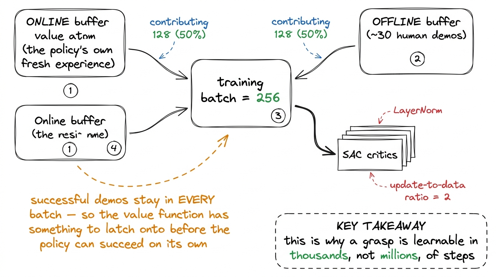
From 0% to a reliable grasp, in ~40 minutes
The policy begins by failing every episode. Its first successful lift appears around step 2,900; from there RLPD's prior-data blend compounds fast, and within ≈5,000 gradient steps it grasps essentially every time.
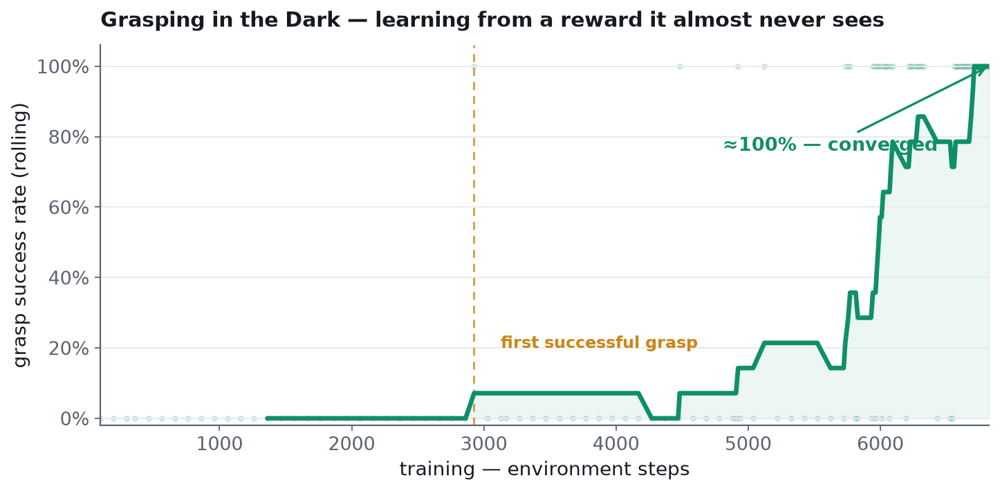
Before & after
Nothing about the task or the reward changed — only the weights did. That is reinforcement learning doing the one thing imitation cannot: getting better than any single demonstration by optimizing the reward directly.
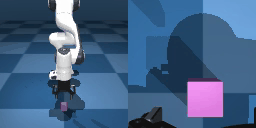
| Policy | Grasp success | Note |
|---|---|---|
| Random / untrained | ~0% | no reward signal exploited yet |
| First 20 training episodes | 0 / 20 | sparse reward, still exploring |
| Last 20 training episodes | 20 / 20 | converged, ≈opt-step 5,000 |
| Trained policy — converged checkpoint | ~95% | 19/20 in the last training window; rolling success plateaus near 100% |
Reading the learning dynamics
Three views of the same run — what changes as RLPD's 50/50 prior-data blend compounds a near-absent reward signal into a reliable skill.
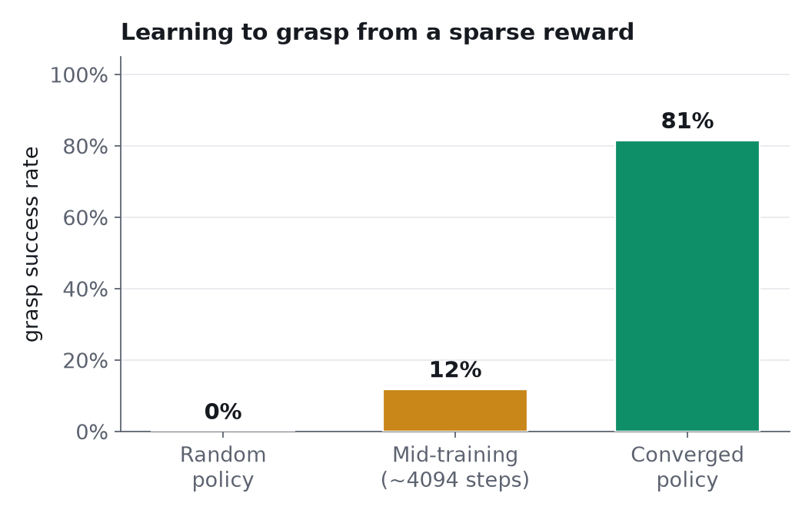
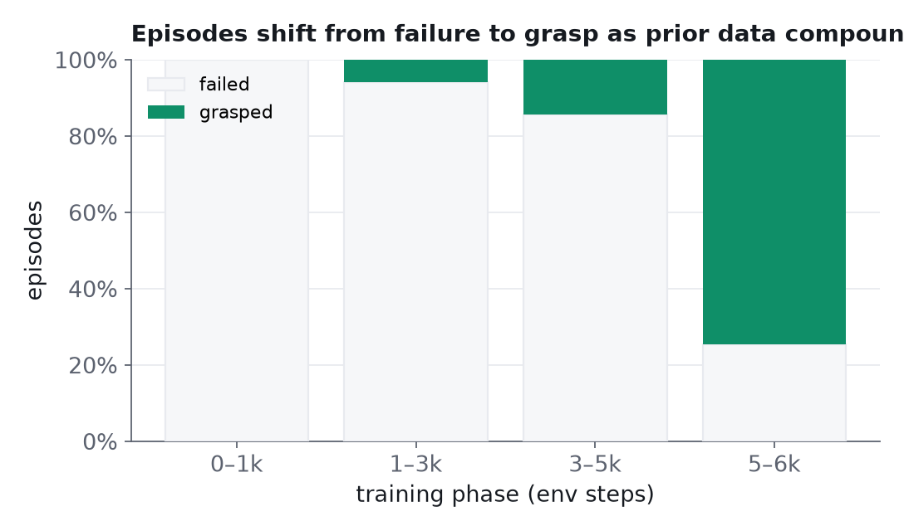
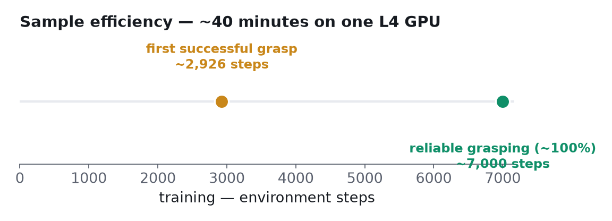
What it takes to run distributed RL on cloud GPUs
A claim that "RL is production-ready" is only credible with its failure modes attached. Every one of these was found by running the system — and every one is mundane and fixable.
• Pristine output dir — learner & actor both validate it; the actor gets its own throwaway dir.
• Checkpoint image crash — the buffer dumps float[0,255] images the writer rejects; patch to uint8.
• Preemption-proofing — checkpoint every 1,000 steps and push each to the Hub from inside the job.
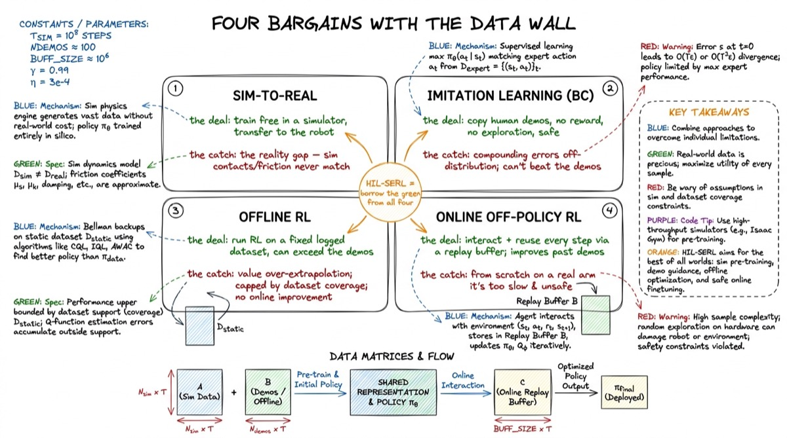
The same brain drives a real SO-101
The point of learning on a Franka Panda in simulation is a $200 SO-101 arm on a real desk. The encouraging fact is how little changes.
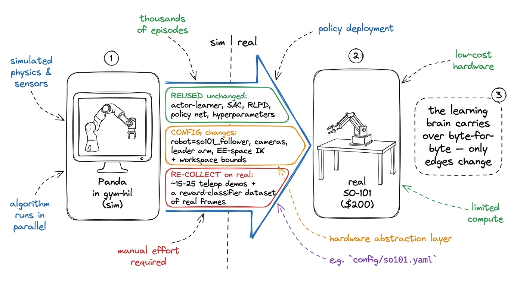
| Reused unchanged | Changes (config) | Re-collect on the real arm |
|---|---|---|
| async actor–learner · SAC learner · RLPD · policy network · SAC hyperparameters | robot = so101_follower · leader arm for teleop · cameras · EE-space IK & workspace bounds |
~15–25 teleop demos · a reward-classifier dataset of real labeled frames (sim gives reward for free) |
People have trained a real SO-101 grasp from scratch this way in roughly 1–3 hours. And the best part of the sim-to-real story is that we didn't just describe it — we ran it on a real arm.
HIL-SERL on a real SO-101 — teaching an arm to wipe a whiteboard
We took the exact same method to a physical $200 SO-101 on a desk, on an Apple-Silicon Mac (no CUDA), using the leader arm for human interventions. The task: pick up a duster and wipe a marker off a whiteboard. This is the honest, unpolished counterpart to the clean simulation above — and it's where you actually learn what RL on hardware takes.
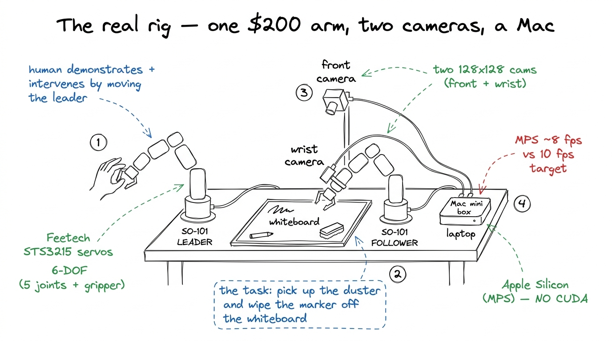
The human is the lever, SAC is the engine
The policy explores; the moment it's about to do something unsafe or unproductive, you press SPACE
and guide the follower by physically moving the leader arm. The correction flows straight into the replay
buffer, and your intervention rate falling over time is the single clearest signal that learning is working.
The leader arm as an intervention controller, joint-space actions, and an Apple-Silicon (MPS) backend — none of it works out of the box. Every fix lives in launcher shims + one teleop subclass; LeRobot's source stays untouched.
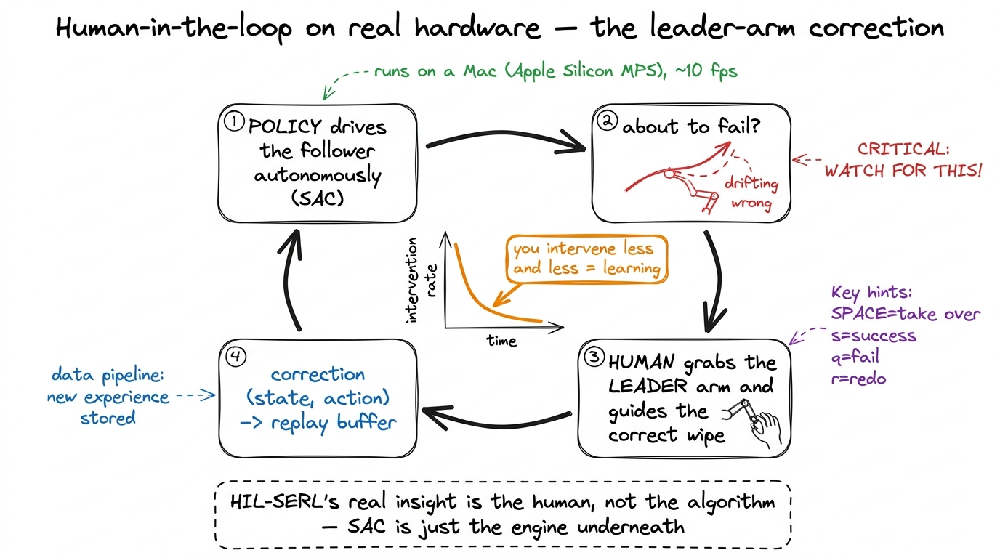
One action convention, unnormalize only at the robot
The SAC actor never normalizes its actions. In end-effector space that's invisible; in joint space the raw
[-1,1] output goes straight to the motors and the arm drifts to zero and freezes — it looks
like the policy gave up, but the action space was simply never mapped to real joints. The fix: keep every source
(demos, policy, leader, buffer) in [-1,1] and convert to joint degrees only at the robot boundary.
(The same normalization trap bit the simulation eval, too — see the paper.)
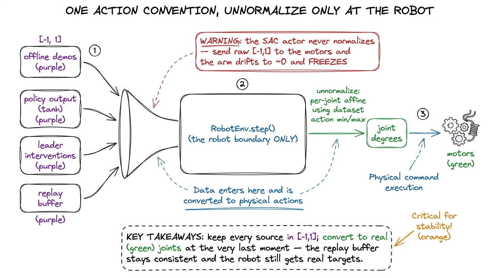
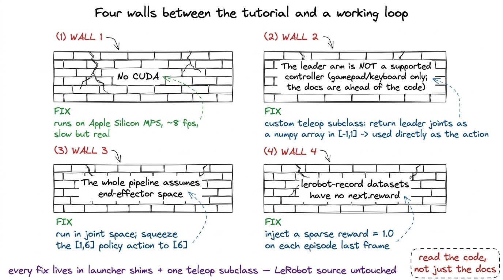
The full HIL-SERL loop ran live on real hardware with leader interventions — none of which stock LeRobot supports. A fully autonomous wipe did not converge in a single session: MPS-speed training, only 10 seed demos, and joint-space (vs. the paper's end-effector space) all work against it. The value is the loop, not (yet) the trophy — watching a real arm explore, stall, get corrected by a human, and fold that correction into its own learning, live, is a far more honest picture of RL in robotics than a polished highlight reel.
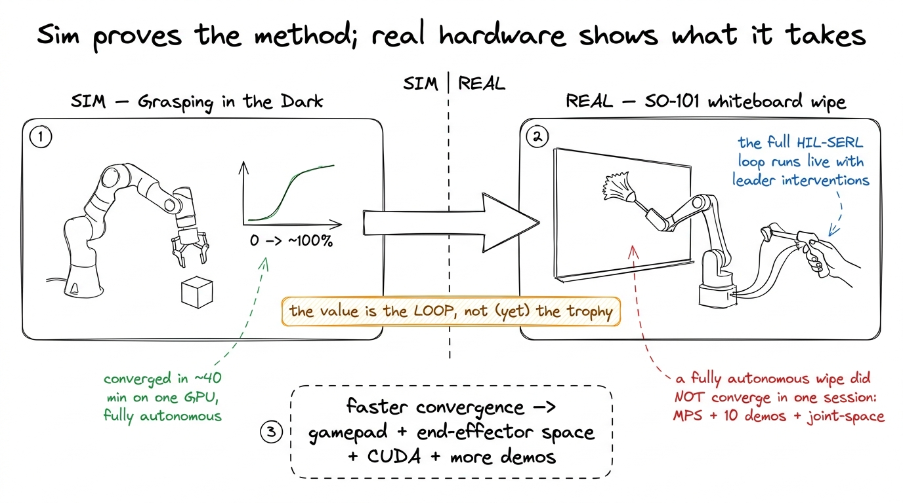
Full code, every wall, and the fixes are in the so101-hilserl-whiteboard repo — with the demo dataset and policy checkpoint on the Hub.
Everything is one notebook and one checkpoint away
The trained policy loads from the Hugging Face Hub in one line; the Colab notebook walks setup → env facts → demo → eval + reward curve → the SO-101 bridge.
Citation
title = {Grasping in the Dark: Sample-Efficient Reinforcement Learning for Robotic
Manipulation, from Reward, on a Single GPU},
author = {Dandekar, Rajat},
year = {2026},
note = {Vizuara AI Labs — RL in Production, Session 3. A reproducible study of
HIL-SERL (SAC + RLPD) in simulation.}
}
Built on HIL-SERL (Luo et al., arXiv:2410.21845), RLPD (Ball et al., arXiv:2302.02948), SERL (arXiv:2401.16013), and SAC (arXiv:1801.01290), via LeRobot.